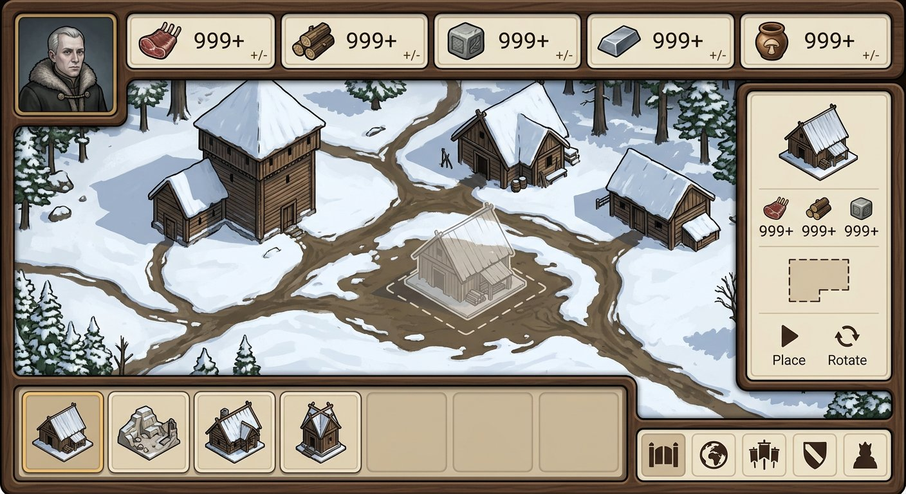
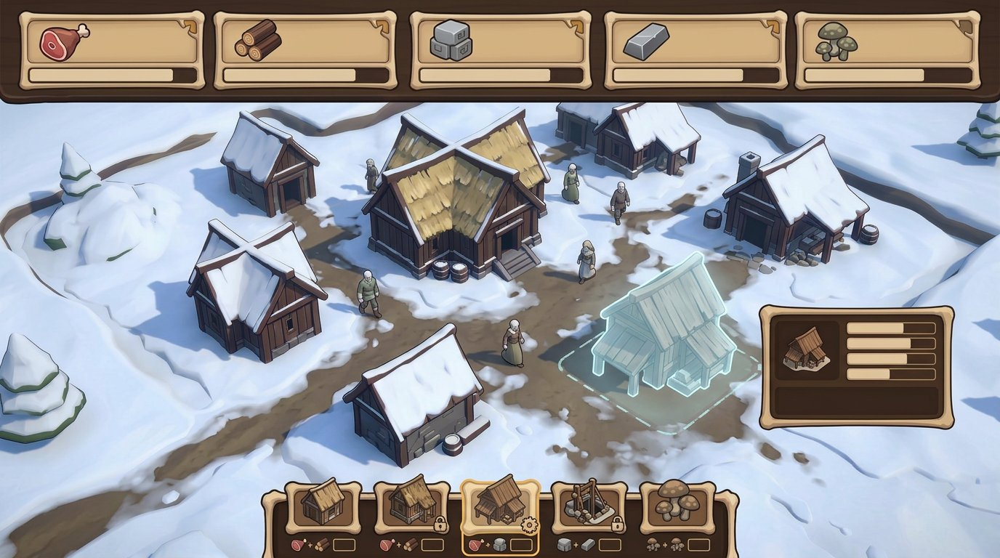
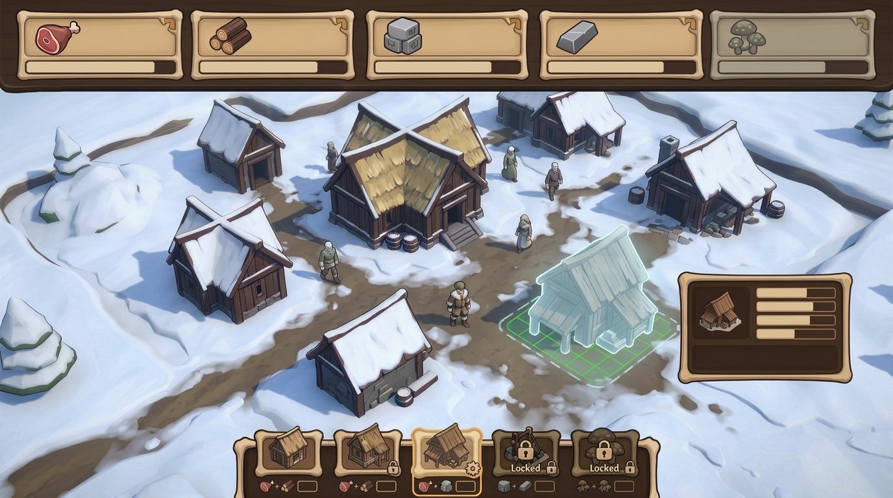
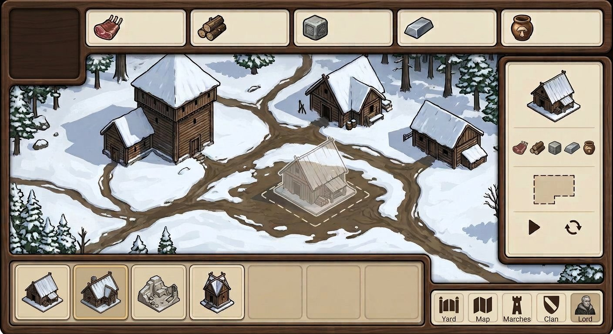
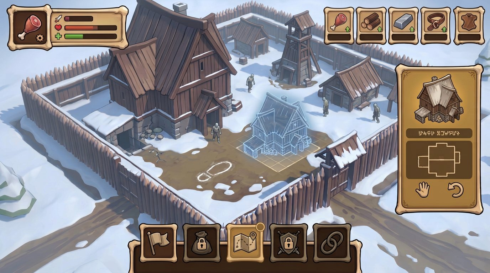

{kind=link}
{kind=link}
{kind=link}
{kind=link}
{kind=link}
Одна геометрия ячейки
Ресурсная ячейка: глиф, запас и маленький маркер производства. Ячейка постройки: миниатюра, зона имени/уровня и компактная стоимость теми же глифами.
The Dead Lords · Bone-Wood · unified concept 08
Сверил выбранные варианты с лором и собрал повторяющиеся сильные идеи в один рабочий Bone-Wood-концепт. Пять генераций ниже проверяют его ключевые части и их общий экран; это не пять несвязанных стилей и не утверждённая спецификация.
Ресурсная ячейка: глиф, запас и маленький маркер производства. Ячейка постройки: миниатюра, зона имени/уровня и компактная стоимость теми же глифами.
Обычная, выбранная и недоступная карточки сохраняют одинаковую форму; состояние задают небольшой знак и рамка, а не новый цветовой язык.
Миниатюра, карточка инспектора и призрак на карте должны сохранять один изометрический силуэт, масштаб, свет и направление контура.
Каждая картинка — полный игровой экран. Кликните для просмотра в исходном размере. AI-текст и числа внутри изображений считать заглушками, не данными игры.

Открытая сцена, ресурсная строка, компактный инспектор и строительная полка — базовый каркас.

Пять одинаковых ячеек с иконкой, местом под запас и небольшим маркером состояния.

Одна и та же карточка показывает доступность, выбор и блокировку через сдержанные маркеры.

Карточка, инспектор и призрак размещения относятся к одной модели, которую игрок свободно ставит во двор.

Проверка полного экрана: выбранный Bone-Wood, свободный двор и общая система ячеек и построек.
{kind=link}
{kind=link}
{kind=link}
{kind=link}
{kind=link}